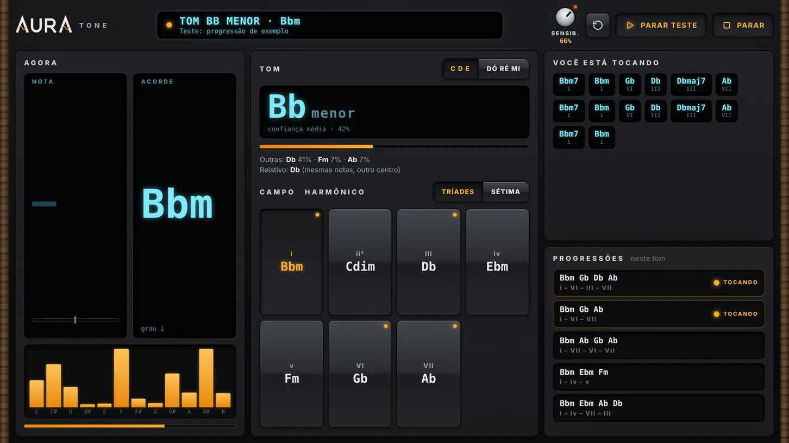
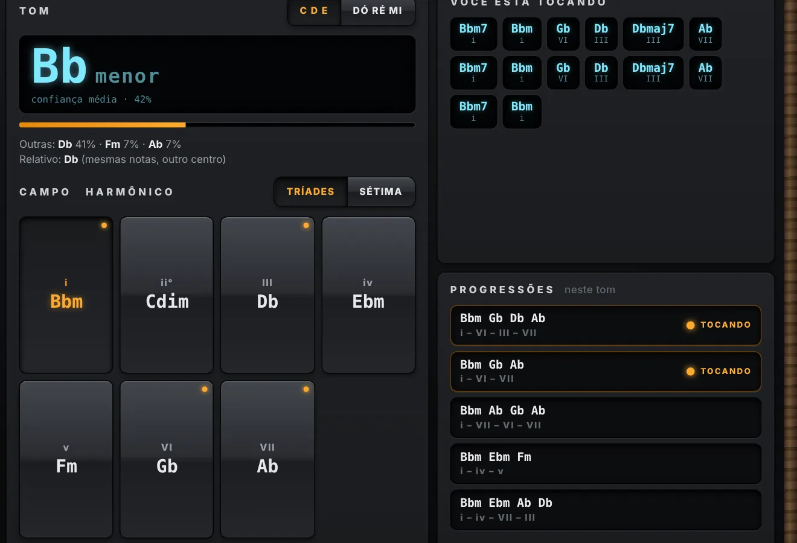

24
tons, maiores e menores
O AURA Tone ouve e diz o tom, com a confiança da leitura e as alternativas, incluindo o tom relativo.
Dó maior · Lá menor · Sol maior · Mi menor · Fá maior · Ré menor · Si bemol maior…
AURA Tone · grátis
Toque, ou deixe a música tocando, e o AURA Tone mostra o tom, o campo harmônico e os acordes. Direto no navegador, sem cadastro e sem instalar nada.

Ligue o microfone e toque. Em poucos segundos aparecem o tom, os acordes e as progressões que combinam com a música.
24
O AURA Tone ouve e diz o tom, com a confiança da leitura e as alternativas, incluindo o tom relativo.
Dó maior · Lá menor · Sol maior · Mi menor · Fá maior · Ré menor · Si bemol maior…
As tríades ou os acordes com sétima do tom. O acorde que você toca acende, e os que já passaram ficam marcados.
As progressões mais comuns do tom, como i – VI – III – VII, com a marca TOCANDO na que você está tocando.
Uma lista com cada acorde e o seu grau no tom, para registrar a música enquanto toca.
A nota com cents e Hz e o acorde em tempo real, para conferir de ouvido o que está soando.
Troque entre C D E e Dó Ré Mi com um toque, do jeito que você lê música.
Veja tudo funcionando antes de ligar o microfone, com uma progressão de exemplo num tom sorteado.
Um knob ajusta a escuta para sala silenciosa ou com ruído, e o botão Zerar começa uma música nova.
O áudio do microfone é analisado no seu aparelho e não é gravado nem enviado. Abre direto, sem conta e sem instalar.
Campo harmônico
O tom aparece com a confiança da leitura e o relativo como alternativa. Embaixo, o campo harmônico acende o acorde que você toca, e as progressões do tom mostram qual delas está soando.

Para quem toca
Descubra o tom em que a banda toca uma música para preparar o pad, o teclado e o baixo antes do culto.
Confira o tom e os acordes de uma música nova antes de passar para o grupo.
Aprenda o campo harmônico e as progressões que combinam com o tom da música que você está tirando de ouvido.
Grátis, sem cadastro e sem instalar nada. Permita o microfone quando o navegador pedir.
O AURA Tone é um serviço gratuito da Ledix Plugins. Os plugins têm 15 dias de teste grátis: conheça o AURA Pad e o AURA Synth Bass.
Pads e bateria para o louvor
O fundo do louvor, numa tela só. Pads infinitos nos 12 tons, drum pads, bateria em loop, teclado de palco, metrônomo e setlist.
Teste grátis por 15 dias. Sem cartão.
Sintetizador
O grave que você sente, e também leads e arpejos. Três osciladores, filtro de 24 dB, 36 timbres de fábrica e modo palco, para tocar ao vivo sem curva de aprendizado.
Teste grátis por 15 dias. Sem cartão.